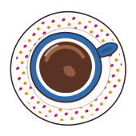

Vorderseite


Marion
Familien- & Paarberatung
Komm, setz dich. Wir reden in Ruhe drüber.
Rückseite

Marion [NACHNAME]in Weiterbildung zur Systemischen Beraterin
- Telefon[TELEFON]
- E-Mail[E-MAIL]
- Web[WEBADRESSE]
- Woin [ORT] und online